Chapter 24
Total control
24.1 Tigran Petrosian
At some time, one way or another, I became intrigued by the play of the ninth World Champion, Tigran Petrosian. The book Petrosian’s Best Games of Chess by Peter Clarke features proudly on my bookshelf. The English author was clearly a fan of the champion of mysterious chess.
Often it’s not really clear how Petrosian won his games. At first sight not a lot is happening, and many positions appear to be completely equal. But suddenly he has obtained a clear advantage. And before his opponent knows what’s happening, he is looking at a cheerless position. How on earth did he do it? Studying the games of the ninth World Champion has clearly helped me as a player to improve my strategic insight significantly. One term springs to my mind if I am to characterize his play: ‘total control!’
His positions are usually super-healthy. Hardly any weaknesses in his pawn structure. Active pieces, long-term play. All founded on formidable chess insight.
For people who like sparkling attacking play, Petrosian is the wrong man. They will be inclined to label his play as ‘boring’, ‘defensive’ and ‘risk-free’. With the exception of the first of these stereotypes, I cannot blame them. Petrosian treats a chess game as a kind of ‘catenaccio’ (an Italian soccer strategy). From a closed defensive formation, the footballers try to tempt the opponent into making mistakes. And then their punishment is merciless. This playing method has brought Italy great successes in soccer. Petrosian’s play has been compared with catenaccio, but also with the hunting methods of a tiger. His first name Tigran seems to point to this as well. A tiger stalks its prey, now and then striking out with its claw to wound it. And when the prey no longer sees a chance to escape, it is devoured.
24.2 Exploiting small advantages
The way in which Petrosian caused the strongest players in the world to falter is far from boring to me. Obviously this is a matter of taste, but after a closer look at the profound way in which Petrosian tackles his victims even the fiercest attacking player will feel a glimpse of admiration.
Petrosian was a past master in collecting and exploiting minuscule advantages. It is not surprising that at times he managed to obtain a good knight against a bad bishop seemingly out of nothing. Or the opposite: a mighty bishop versus his opponent’s crippled knight. Many attacking players have crashed on his cunning defence. With his prophylactic way of thinking, he was, as it were, moving along with his opponent. If there was a remote danger, somewhere on the horizon, he reacted immediately. This way of playing proved to be very frustrating for many opponents. How could they ever unsaddle this superman? Any attempt was parried even before the actual skirmishes started! And if the position did become sharp, the former World Champion turned out to be an excellent calculator and an inventive defender.
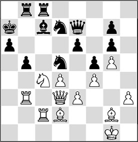
After a heavy strategic struggle, Kasparov has driven his opponent into a corner by active play and by sacrificing a pawn. The black king is highly exposed, and the white pieces have taken up menacing positions.
32.♖a2!
The exclamation mark was given by Kasparov. Perhaps there was an even stronger plan at hand. It was possible to play the knight to a3, introducing sacrificial possibilities on b5. Black can parry that threat with, for instance, (32.♘a3) 32…♗b6, but after 33.♖a2 ♔b7, the black king is suddenly on the long diagonal. With 34.♘c2! ♖a8 35.♘b4, White can quickly exert pressure on d5. Even if Black can avert the first threats by 35…♕d6, after 36.♖b1 followed by ♕b3, he faces a renewed attack on his pinned knight on d5. Black remains under heavy pressure, and it doesn’t look as if he will be able to work his way out of it any time soon.
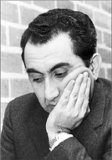
Tigran Petrosian
32…♔b7
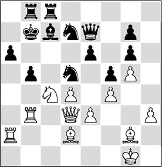
Petrosian makes a wise decision, removing his king from the a-file in advance, as the a6-point may come under fire very soon. Obviously, taking the white knight is taboo, in view of 32…bxc4 33.♖xa6+!, with mate by force.
On 32…♗d6, White has a combination that yields him an advantage: 33.♖xb5!? ♖xb5 34.♘xd6 ♕xd6 35.♕xb5.
33.♗b4?!
Kasparov: ‘Strangely enough, this natural move, building up the pressure, is a serious mistake. I underestimated Black’s defensive potential! (…) He should not be circumventing, but attacking Black’s fortifications – at a6, b5 and d5.’ This aim could have been achieved by the knight manoeuvre ♘c4-a3-c2-b4. Kasparov discovered the grandiose move 33.♘a3! immediately after the game. ‘In my book The Test of Time (1984) I gave 33…♗b6 34.♘c2! ♖a8 35.♘b4 ♕d6
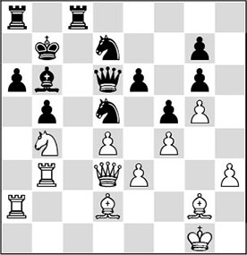
Analysis diagram
36.e4?! fxe4 37.♕xe4 as the main variation (37…♖a7 38.♕xg6 ♗xd4+ 39.♔h1 ♘7b6 40.f5!+–, HG), overlooking the spectacular refutation which was later indicated by Timman: 36…♘c5!! 37.dxc5 ♕xc5+ 38.♔h2 ♕g1+ 39.♔g3 ♕f2+ (39…♖h8? 40.♗e3!) 40.♔h2 ♕g1+ with perpetual check.
Even so, with the help of the computer I was able to find the accurate 36.♖b1! ♘b8 (36…♖c4? 37.♕a3!) 37.♕b3 ♖c4 (37…♖d8 38.♖c1) 38.♖c1 ♖xc1+ 39.♗xc1 with an overwhelming advantage for White.
My computer friend also brought some ‘joy’ in another direction. In my book I stated that after 33.♘a3! the reply 33…♘7b6 would lose to 34.♘xb5 axb5 35.♕xb5 ♖d8 (35…♖a8?? 36.♗xd5+ and mate) 36.♗b4! ♕e8 (37…♕f7 37.♗c5) 37.♕a6+ ♔c6 38.♗c5 ♔d7 (38…♖a8 39.♖xb6+) 39.♗f1!+–. However, it transpired that 35…♖h8! is stronger – here White has to display exceptional ingenuity in his attack:
1) 36.♗xd5+ (36.♖c3?! ♔c8!) 36…exd5 37.♖c3 ♔c8 38.♖a7 ♘c4 39.♕xd5 ♘xd2 40.♖cxc7+ ♕xc7 41.♖xc7+ ♔xc7 42.♕a5+ ♔d6 43.♕xd2 ♖xh3 44.♕c1 ♖bh8 45.♕c5+ and only a special analysis can establish whether the queen and pawn will overcome the resistance of the two rooks;
2) 36.♗b4! ♕e8 37.♕a6+ ♔c6 38.♗f1! (but not 38.♗c5 ♔d7 39.♖ab2 ♕c8! 40.♕b5+ ♔d8) 38…♘xb4 39.♖xb4 ♕d8 (…) 40.♕b5+ ♔d6 41.♕e5+ ♔e7 42.♕xg7+ ♔d6 43.♖c2 (HG: Here, 43.♕e5+ ♔e7 44.♖a7 is even more convincing: 44…♘d5 45.♗c4 ♖xb4 46.♗xd5, winning) 43…♘d5 44.♗b5 ♖xb5 45.♖xb5 and wins.
Thus, to find the narrow path leading to a win for White, many years and lots of megahertz of computer power were required. But at the board, not suspecting any latent dangers, I continued simply building up the pressure. Such a general approach does not always prove correct, as I came to realise within literally a couple of moves.’
‘33.♕b1!? was interesting, but this too would not have solved the problems facing White is facing’, wrote Kasparov. Today, in 2016, the strongest engines consider this possibility to be the strongest. There is no sensible idea to be found against the sacrifice on b5 and the ♘a5 motifs. Three examples:
A) On 33…♖a8, there follows 34.♗xd5+ exd5 35.♖xb5+! axb5 36.♕xb5+ ♘b6 37.♘xb6 ♗xb6 38.♕xd5+, and White regains the sacrificed material with interest;
B) 33…♖h8 is a way to create an escape route for the black king, but it is of no use. White continues strongly with 34.♖c2, discouraging the black king’s escape via c8: 34…♔c8 (other moves, like 34…♕f8, also fail to the motif of the knight’s entrance via a5. Here, 35.♗a5! is very strong: 35…♗xa5 36.♘xa5+ ♔a8 37.♖c6 ♖b6 38.♖xe6!, and now the ♗g2 will also have its say!) 35.♘a5, and the knight will decisively penetrate via c6, as becomes clear after 35…♖a8 36.♗xd5 exd5 37.♖bc3 ♖a7 38.♘c6, winning;
C) 33…♖f8 34.♖c2! ♖f7 (34…♖fe8) 35.♕a2 ♗b6 36.♖b1 bxc4 37.♕xc4.
33…♕e8!
‘From here the queen indirectly defends the b5-pawn. 33…♕d8? was much weaker in view of 34.e4! fxe4 35.♕xe4 with irresistible threats: 35…♕e8
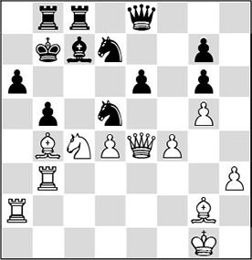
Analysis diagram
36.♕xd5+ exd5 37.♗xd5+ ♔a7 38.♖xa6+ ♔xa6 39.♖a3+ ♗a5 40.♖xa5 mate, or if 35…bxc4, 36.♕xe6 ♘7b6 37.♖b1 ♕d7 38.♕xd7 ♘xd7 39.♗xd5+ ♔a7 40.♖ba1 ♖b6 41.♗c5 and wins.’
34.♗d6
HG: Probably the strongest continuation. 34.♗a5 is met by 34…♕e7!.
‘Petrosian’s recommendation 34.♘d6+!? ♗xd6 35.♗xd6 ♖a8 36.e4 was better, for example: 36…♖c1+ 37.♔h2 fxe4 38.♗xe4 ♖c6 39.♗a3 ♘7b6 40.♖f2, and ♗xg6 with the initiative’ – Kasparov.
34…♖a8! 35.♕b1?
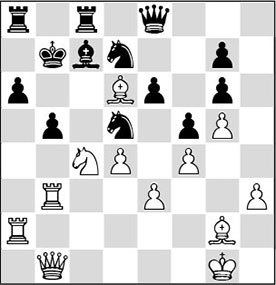
White again plays on general grounds, hoping that an opportunity for him to land some combinative blow will present itself. After the ‘concrete’ 35.e4 fxe4 36.♕xe4 ♕f7, Black could have felt quite calm with his powerful knight at d5. But 35.♖b1! ♗b6! (35…♔c6 36.♗a3!, and if 36…♘7b6, then 37.♘a5+ ♔d7 38.♖xb5!) 36.♘e5 would still have retained adequate compensation for the pawn.
35…♔c6!!
A fantastic defence! This move, which Petrosian made instantly, threw me into complete confusion: how is it possible to move the king forward with a board full of pieces? After Steinitz, who had done such a thing?! The psychological effect of the 30… b5!? thrust and the king march …♔a7-b7-c6 was so strong, that I was unable to gather my thoughts and I quickly lost.
36.♖ba3?
It was essential to play 36.♗xc7 36…bxc4 (36…♔xc7 37.♘b2 ♔d8 38.♕a1! and ♘d3 with compensation for the pawn) 37.♖b7! (the over-optimistic 37.♗a5?! cxb3 38.♕xb3 ♖ab8 39.♖c2+ is refuted by 39…♘c5! 40.♖xc5+ ♔d7) 37…♖xc7 38.♖xa6+ ♖xa6 39.♕b5+ ♔d6 40.♕xa6+ ♔e7 (40…♖c6? 41.♕a3+, HG) 41.♗xd5 ♖xb7 42.♗xb7 (not 42.♕xe6+? ♔d8 43.♕xe8+ ♔xe8 44.♗xb7 c3) 42…♕b8!, with a drawn endgame’ – Kasparov.
36…bxc4 37.♖xa6+ ♖xa6 38.♖xa6+ ♗b6 39.♗c5
After 39.♕b4 ♔b7 40.♖a2, Black wins by 40…c3!.
39…♕d8! 40.♕a1
40.♕b4 does not help either, in view of 40…♖a8 41.♕a4+ ♔b7.
40…♘xc5 41.dxc5 ♔xc5 42.♖a4
In post-game analyses it was noticeable how much more deeply my opponent had evaluated the resulting positions’ – wrote Kasparov.
But did Petrosian only defend? Certainly not! In many games he took the initiative from the first move, and – starting from a healthy set-up – searched for ways to unsaddle his opponent. Petrosian once wrote that it was not important which of the pieces had been removed from the board. What mattered was what was left!
With his deep insight he converted many games to a win in this way – his opponent would be left behind in despair, wondering how he could ever have been saddled with such bad pieces so suddenly…
Petrosian was also a great endgame virtuoso. With a steady hand he steered many a small advantage, obtained in the middlegame, into the endgame, where it was often easier to convert it to a win. Apart from that, he also had the ‘patience of a saint’. Not infrequently he got a large space advantage in quite closed positions. Then he would start working, taking his time to put his opponent on the rack for hours on end. He would take great care to prepare the occupation of an open file or a pawn break. Only when all the pieces were on the right squares he would come up with a pawn move that his opponent had seen coming for hours, without being able to do anything about it. Also, some of his manoeuvres were ‘feigned’. At a certain point his opponents could no longer discern whether Petrosian was working constructively on a winning plan, or just trying to throw dust in their eyes.
24.3 Combating the King’s Indian
Petrosian was a past master in the struggle against a sharp opening system, the King’s Indian, an important way of combating the opening move 1.d4.
As we all know, in the King’s Indian Black relies heavily on the pawn push …f7-f5. After Petrosian had invented the system with 7.d5 that now carries his name, he attained many successes with it.
It’s time for an explanation of the deeper strategic ideas in this Petrosian Variation.
1.d4 ♘f6 2.c4 g6 3.♘c3 ♗g7 4.e4 d6 5.♘f3 0-0 6.♗e2 e5 7.d5
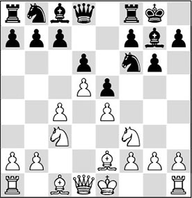
This is the Petrosian System. White immediately fixes the central pawn formation, so that the chain struggle can start right away.
7…♘a6
Today, we know that 7…a5 is a better way to play. Further on, we will be able to give a better explanation for this.
8.♗g5 h6 9.♗h4 ♘a6 10.♘d2 ♕e8
The black queen moves out of the pin by the ♗h4, thus enabling the ♘f6 to make a move, and introducing the possibility of …f7-f5 – as said, this is the standard plan in this variation. Here, it’s essential that Black leaves his pawn on g6! For if White answers …f7-f5 with e4xf5, Black will be able to recapture by …g6xf5. With two pawns on e5 and f5, Black will get a flexible pawn front, preventing White’s pieces from occupying central squares.
This is the reason why Petrosian would like to provoke the pawn move …g6-g5. If the black pawn is on g5, and Black later plays …f7-f5, White replies e4xf5. As a result, he will gain control of the e4-square for one of his pieces – in most cases, a knight. Petrosian often proved he was a past master in gaining a positional advantage by using the control of this strong square.
11.0-0 ♘h7 12.a3 ♗d7 13.b3 h5
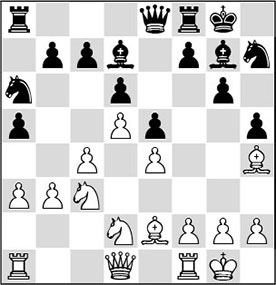
Analysis diagram
Suddenly threatening to trap the ♗h4 by …g6-g5 and …h5-h4. 13…f5 was also possible. Black even threatens to trap the ♗h4. But in practice, it turns out that White has a reasonable counter with 14.f3. Nevertheless, White’s chances of achieving an advantage are very slight.
Black can first work on the activation of his dark-squared bishop with 14… ♗h6.
8.♗g5 h6 9.♗h4 g5
This was the move Petrosian would be waiting for. This pawn move weakens the light squares in Black’s position. The consequences of this were made clear in a game Petrosian-Yukhtman, Tbilisi 1959. We now present this game with a meticulous verbal analysis.
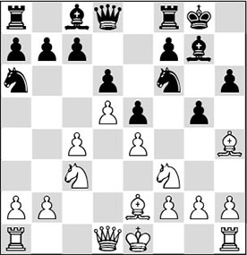
10.♗g3 ♘h5
At the time, it was thought that Black was fine here. The bishop on g3 is out of play, the black knight can go to the beautiful square f4, and the liberating action …f7-f5 has become possible.
11.♘d2 ♘f4 12.0-0
It seems as if Black has achieved what he wanted. In reality, there is only one good move in this position.
12…♘c5?!
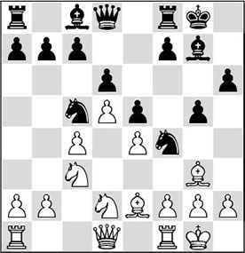
As will become clear in the further course of the game, this is a considerable strategic mistake, although it is hard to recognize it at this stage. By the way, today’s engines also have great difficulty in finding the right moves here. Without a doubt, the black player should have taken the light-squared bishop while this was still possible: 12…♘xe2+. But of course, it didn’t enter his head to exchange his ‘beautiful’ knight for White’s bad bishop. In the game, we will see the consequences of this omission.
13.♗g4!
White would surely like to exchange his bad bishop for Black’s good one.
13…a5?!
This looks logical, but in view of Petrosian’s measured reply, he should have preferred something else.
With 13…♗xg4, he could also have exchanged the light-squared bishops, but the difference is that after 14.♕xg4 h5 15.♕f5 h4, White has to give up his bishop for the knight on f4 – which was actually one of the ideas behind Black’s play. After having been buried alive, the ♗g7 now comes to life after 16.♗xf4 exf4, and it looks as if this is still more or less playable for Black, even though he has had to give up a number of light squares on the king’s wing.
14.f3!
A very clever move. White prefers the exchange to take place on g4, as after …♗xg4 fxg4, the f5-square will be firmly fixed, making …f7-f5 impossible for good. The second idea behind the text move is that White can manoeuvre his bishop from g3 to f2 and e3, where it is much better placed.
14…♘cd3
Hitting thin air. Relatively better was 14…h5 15.♗xc8 ♕xc8, although also here, after 16.♗f2 White would obtain excellent prospects.
15.♕c2 c6
If Black thinks he can generate counterplay with this move, he is in for a bad disappointment. In fact he is just helping White by opening lines and diagonals on the queenside. One thing White has to beware of is the check on b6.
16.♔h1 h5 17.♗xc8 ♖xc8
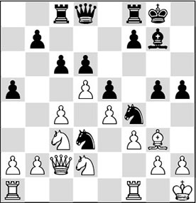
On the surface, things do not look so bad for Black. The rook is on the same file as White’s queen, and he can open this file at any moment by …c6xd5.
18.a3
Another one of those ‘little’ moves that were Petrosian’s trademark. He has seen that Black has no concrete threats, and in the meantime prevents …♘d3-b4.
18…cxd5 19.cxd5?!
Oddly enough, this exchange plays into White’s hands.
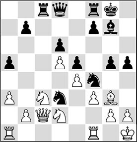
Black has made his own d6-pawn weak, which means that he has voluntarily carried out White’s plan for him!
19…♘c5?!
Giving up part of his activity. Much better was 19…♕b6, so as after 20.♖ab1?!, to continue with the quite annoying ‘disturbing move’ 20…♕e3!. Then, White’s best reply is 20.♗xf4!, since now Black cannot take back with the pawn: 20…♘xf4 21.♖ae1, after which he can drive off the knight by g2-g3. White can counter the temporary activity by 21…♕d4 with 22.♘b3 ♕d3 23.♕f2, after which he can further increase his small strategic advantages.
20.♗f2 g4?
Black changes tack. Suddenly he considers that he should be playing on the kingside after all. But this pawn move again weakens several squares, and provides White with several targets. Black is in fact digging his own grave.
21.g3 ♘g6 22.fxg4 hxg4
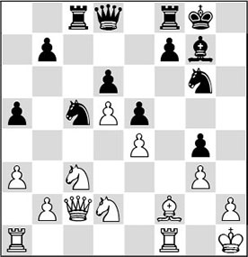
23.♗e3!
Again, very strong. Not only does White prevent …♗g7-h6 (meaning that this bishop remains very bad), but at the same time, he conquers the f5-square for his pieces.
23…b5?!
A pawn sacrifice that brings Black nothing.
24.♘xb5 ♕b6 25.a4!
A beautiful square for the knight.
25…♕a6 26.♘c4 f5
Black is lost, and it’s all or nothing for him now. Of course, Petrosian sees to it that it will be the latter…
27.♖xf5 ♖xf5 28.exf5 ♕b7 29.♕g2
Very timid – safety first! There was nothing against 29.♘bxd6.
29…♘b3 30.♘cxd6 ♕d7 31.♖f1
And here the black player had had enough.
24.4 The ‘V for Victory’
All this reminds me of a small anecdote told by Clarke in the book I mentioned above. As we have seen, Petrosian enjoyed restraining his opponent’s play. Especially against King’s Indian set-ups he was phenomenal. All players who opt for this opening with black dream of a ferocious attack against the white king. Not with Petrosian!
In the following game we see how the white player manages to lock the king’s wing by provoking the moves …h7-h6 and …g6-g5. After that, he fixes the f5-square by g2-g4, to prevent Black from ever achieving the …f7-f5 push. Petrosian put his pawns on d5, e4, f3, g4 and h5 (versus d6, e5, f7, g5 and h6), and Peter Clarke jokingly called this formation the ‘V for Victory’!
V for Victory
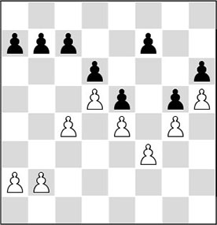
Next, Petrosian manages to provoke new weaknesses on the queenside, and generates active play there. After that, the opponent often collapses.
I am offering the next game in the form of a quiz to enable you to practice for yourself! Cover the moves with a card and slowly push it down. Try to answer every question you encounter.
1.d4 ♘f6 2.c4 g6 3.♘c3 ♗g7 4.e4 d6 5.♗e2
Petrosian postpones the development of the king’s knight for a while.
5…0-0 6.♗g5 h6
One of the greatest aficionados of the King’s Indian, Teimour Radjabov, opts for a transfer to the Benoni by 6…c5 in this position.
7.♗e3 e5
Here, Black can still aim for Benoni-type positions with 7…c5.
8.d5 c6?!
This is obviously not the way to play. But Petrosian’s approach to this position has become a wise lesson for anyone who plays the King’s Indian. In a game Vitugov-Inarkiev, Moscow ch-RUS 2007, Black opted for a ‘Benoni Wall’ here by 8…c5, which brought him success.
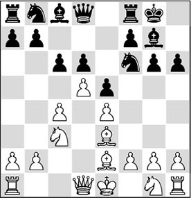
9.h4!
An attacking move? We will see soon.
9…cxd5 10.cxd5
Wasn’t it White’s plan to play c4-c5 and then c5xd6 at some point? Well, Black has done this for him now.
10…♘bd7 11.h5
Threatening to open the h-file.
11…g5
Also here, White has managed to provoke Black into playing …g6-g5. And that was just what the Armenian wanted.
12.f3 a6
The black player hasn’t treated the King’s Indian as it should be treated. His sixth move deserves disapproval, since on move 11 he was forced to play the weakening …g6-g5. From here on, we will present the game in quiz form.
13.g4!
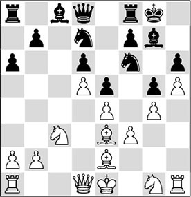
Excellently played! Black’s thematic push in the King’s Indian (…f7-f5) is now permanently impossible, and since the f5-square has been fixed, White will be able to post a knight there later on.
With the white pawns constituting such a nice formation, Clarke enthusiastically called this the ‘V for Victory’ formation. Black does not avail himself of the standard plan, and thanks to his space advantage in the centre, White can prepare to create play on the queenside. One of the ideas is to increase his space advantage, for example, by the push a2-a4-a5, fixing the b6-square. After this, his pieces can be regrouped to try to enter the seventh rank, or to take aim at the weakling on b7.
Less good was 13.♘h3 – because there is a more principled option, but also because the knight cannot quickly move to good squares from h3.
It seems like a good idea to post the bishop on c2 with 13.♗d3, but this is not really to the point.
The sacrifice 13.♗xg5? is nonsense. After 13…hxg5 14.h6 ♗h8 15.h7+ ♘xh7, there is no compensation for the sacrificed material in sight.
13…b5
Since he is already seeing dark clouds gathering over his position if White manages to play a2-a4, the black player wants to act first. But with the text, he compromises his play on the wing where White is the most active. What follows now is another display of excellent insight in the game.
14.a4!
A fine move, conquering the c4-square. Also very interesting, and perhaps equally strong, was 14.b4, to follow up with a2-a4 later. Also here, Black is saddled with several weaknesses.
14…b4
15.♘b1!
The point of the previous move. The white knight strives for the c4-square, from where it can take aim at the weak pawn on d6, which forms the base of Black’s pawn chain.
Another idea is 15.♘a2, so as to continue with ♘a2-c1-b3. From this square, a black knight appearing on c5 can be driven off. Still, the text move is to be preferred.
15…a5 16.♘d2 ♘c5
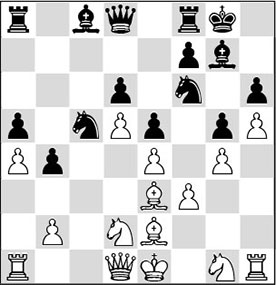
Now that Black has no counterchances on the kingside, White can focus on the queenside.
17.♗xc5!!
Very good. You are not allowing yourself to be hindered by dogmas. True, White surrenders his beautiful bishop, but in return, he saddles Black with a weak pawn on an open file. At the same time, he creates a protected passed pawn for himself.
The normal move is 17.♘c4, which can be regarded as the logical follow-up to the previous moves. However, White does not accomplish much with this move at this stage. The knight on c5 is standing there like a tower of strength, hindering White’s efforts to make progress: 17…♕e7 18.♖c1 ♘fd7, and for the time being, Black holds.
17.♘b3 is not logical, as the knight was aiming to go to c4. And there is another reason why this continuation is not so convincing. Black can muddy the waters by 17…♘cxe4!? 18.fxe4 ♘xe4, followed by …f7-f5.
17…dxc5
18.♗b5!!
Perfect! The black knight is preparing to block the protected passed pawn, and so it has to be eliminated before anything else. White also gives up his second bishop, but this is favourable for him, as the white knights are very strong.
18.♘c4 looks like the logical continuation, but with 18…♗a6 and …♘e8 followed by …♘d6, Black can attack this strong knight, and occupy the ‘stopping square’ d6.
18.♖c1 is a move that does no harm, but it can also be played at a later stage since White has a better continuation. There might follow 18…♘d7 (18…♕b6; 18…♕e7 19.♕c2 ♘d7 20.♗b5) 19.♘b3 (19.♗b5 ♕b6 20.♘c4) 19…♕b6 20.♕c2 ♗a6.
18…♗b7 19.♘e2 ♘e8
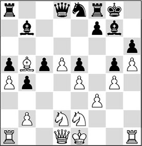
20.♗xe8!! ♖xe8 21.♘c4 ♗a6 22.♕b3 ♕f6
White has to watch out: Black is threatening to win a pawn.
23.♖c1 ♗f8 24.♘g3 ♗c8 25.0-0
Petrosian has been called ‘the champion of late castling’! Once, he wrote that you should only castle if there is nothing better to do…
25…♖d8 26.♔g2 ♖a7
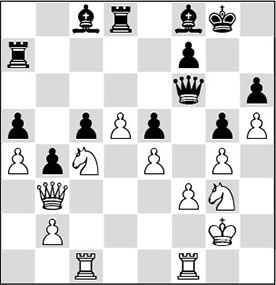
27.♖f2!
You have spotted well that White has to find play on the c-file. The weak pawn on c5 is put under pressure. Also strong here is 27.♖fd1, although it seems as if there is not much to do for the rook here. For the moment, Black can keep control of the d6-square. However White has two plans:
- he can work with d5-d6, then perhaps trade the d6-pawn for the c5-pawn, and break through in the centre;
- he can regroup his pieces, manoeuvring his knight from c4 to d3 after doubling on the c-file, to put pressure on the c5-pawn.
Slightly premature is 27.♘f5, as it is better for White to keep this possibility at hand than play it.
Another idea would be 27.♘e3, to establish a knight on f5. This is certainly not a bad idea. But it will still be difficult for White to find a way to make real progress.
Here, 27.♖c2 amounts to the same thing. White wants to create the option of doubling on the c-file.
27…♔h7 28.♖fc2 ♕a6
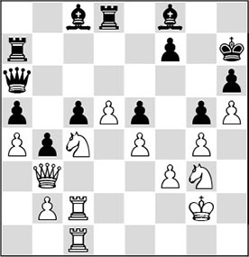
Black is giving in. He puts the pawn on e5 on offer, hoping to find more employment for his bishops. With passive defence, after a move like 28…♗d7, White would have to make some more effort to make progress. He would eventually conquer the pawn on c5, and win anyway.
29.♘xe5!
Petrosian shows no fear. He simply calculates that the black bishop pair cannot compete with the mighty white knights in this type of position.
29…♖c7 30.♘c4 ♗g7 31.♕d3 ♔g8 32.♖d2 ♖e7 33.e5
White spots a liquidation, temporarily giving back the pawn to simplify the position.
33…♗xe5 34.♘xe5 ♖xe5 35.♕xa6 ♗xa6 36.♖xc5
Thus, White has again gained a pawn, and a5 is also destined to be lost.
36…♗c8 37.♖xa5 f5 38.gxf5 ♗xf5 39.♘xf5 ♖xf5 40.♖b5!
Another excellent move. The rook is now protected, allowing the d-pawn to move forward.
40…♖df8 41.d6!
A flawless liquidation by Petrosian. This pawn has to do the work!
41…♖xb5 42.axb5 ♔f7 43.d7 ♖d8 44.b6 ♔e7 45.b7
1-0
I put this ‘V for Victory’ on the board several times. Players I had trained with would know that I aimed for it, and would burst into laughter when they passed my board and saw the ‘V’. My unsuspecting opponent would look up in annoyance – what was wrong with these onlookers? One example is a game from the first round of an open tournament, against the highly sympathetic Marcel Laarhoven, from a town near Eindhoven. Marcel was an enthusiastic chess organizer, and the father of the talented Thijs Laarhoven. He passed away unexpectedly in 2016.
1.d4 ♘f6 2.c4 g6 3.♘c3 ♗g7 4.e4 d6 5.♗e2 e5 6.d5
6…♘bd7 7.♗g5 b6?!
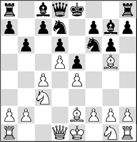
This is clearly not a good idea. The light-squared bishop doesn’t belong on b7.
8.g4!
White is already starting to brick up the kingside.
8…♗b7 9.h4 ♕e7 10.h5 h6
Necessary, since White was threatening to play h5-h6 himself.
11.♗e3 g5 12.f3!
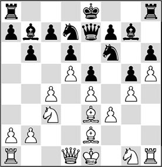
Made it – it’s the ‘V’ again!
12…♘h7 13.b4 a5 14.a3
Of course, White has to find a way to make further progress. He will be operating on the queenside.
14…0-0
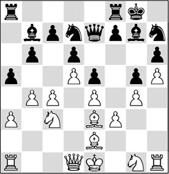
Eventually, White will have to build his play on c4-c5, but the white pieces are not sufficiently well placed for this breakthrough. So I decided to start gathering small advantages, the Petrosian way.
15.♗d3!
The bishop may want to move to c6 via c2-a4. But, no less important, the e2-square is vacated for the knight, which can then jump via g3 to f5.
15…axb4
Black decides to relieve the tension. It is questionable whether this was wise. Better was 15…c5, putting the question to White: how should he react? Probably, I would have played 16.dxc6, to make use of the d5- and f5-squares after that.
16.axb4 ♖xa1 17.♕xa1 ♖a8 18.♕b2 f6 19.♘ge2 ♗f8 20.♔f2 ♕e8 21.♘g3 ♗c8 22.♘b5 ♕d8 23.♖a1 ♗a6 24.♘c3 ♔f7 25.♖a3
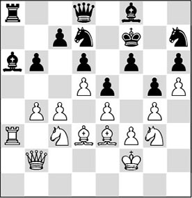
White prepares a doubling on the a-file.
25…♗g7?!
He wants to vacate the f8-square for one of his knights, but this proves to be a highly unfortunate choice.
If 25…♗e7, 26.♘f5.
26.♕a2 ♗b7 27.♖xa8 ♗xa8
On 27…♕xa8 28.♕xa8 ♗xa8, 29.♘b5 wins a pawn and the game.
28.♘b5 ♕b8
This loses a crucial pawn. However, there was no adequate defence. My idea after 28…♗b7 was to continue with 29.♘f5 (threatening 30.♘xd6!) 29…♗f8 30.♕a7 ♕c8 31.c5 bxc5 32.bxc5 ♘xc5 33.♗xc5 dxc5, and now 34.d6! wins.
29.♘xc7 ♕xc7 30.♕xa8 ♘hf8 31.♘f5 ♘b8
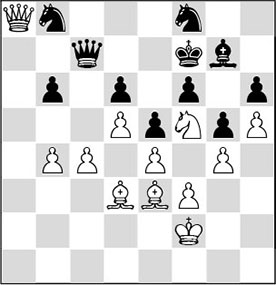
There are various ways to haul in the loot here.
32.♕b7!
During the game, this looked like an attractive finish to me. 32.c5!? was also very strong: 32…bxc5 33.bxc5 dxc5 34.d6, followed by 35.♗c4+.
32…♕xb7 33.♘xd6+ ♔e7 34.♘xb7 ♘fd7 35.c5
The pawns decide the battle.
35…bxc5 36.bxc5
And Black had seen enough.
There is one more achievement by Petrosian which, after careful study, I consider so beautiful that I present it to you here with pleasure. The way in which Petrosian obtains an advantage and converts it into more concrete strategic goals is highly instructive.
1.♘f3 e6 2.g3 f5 3.♗g2 ♘f6 4.0-0 ♗e7 5.d4 0-0 6.c4 c6
Black does not yet decide whether to make it a Stonewall, or to proceed to a type of position with …d7-d6, as in the Classical Dutch. The immediate 6…d5 is also possible: 7.b3 c6 8.♗a3, exchanging his bad bishop for Black’s good one.
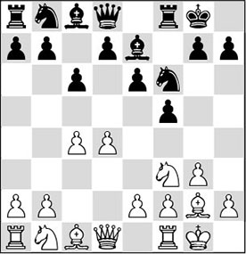
7.♕c2
White is making preparations for the pawn push e2-e4, forcing Black to lay his cards on the table. The direct 7.b3 is possible, once again getting ready to make the favourable trade. But Black can still postpone …d7-d5 by 7…♕e8, as now 8.♗a3 doesn’t make much sense due to 8…d6.
7…♕e8 8.♘bd2
It is always hard for White to determine where to put his knights. In the Stonewall, he usually strives for a set-up like the one Petrosian will soon get on the board.
8…d5 9.♘e5 ♘bd7 10.♘d3 ♘e4 11.♘f3
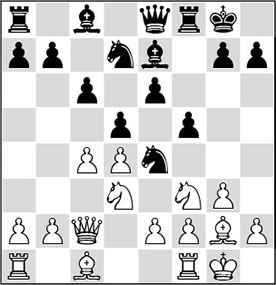
This is an important tabiya for the Stonewall set-up in the Dutch Defence. White would like to obtain full hegemony in the centre by ♘fe5 followed by f2-f3. He can also first play b2-b3 and ♗c1-b2. Once the black knight has been chased away from e4, White will eventually start exerting maximum pressure on the black pawn formation by e2-e4. We have even seen games where White also played h2-h3 and g3-g4 later.
11…♘d6?
A strange retreat. But Bondarevsky wants to combat a white knight on e5 with both of his own knights. A better choice for Black was 11…♕h5 or 11…g5, moves that are a little more common in modern chess.
12.b3 b5
This was his second intention. He wants to force White to do something with his c4-pawn. This is not such a strange thought, since if White pushes this pawn, as in the game, it will hardly be possible for him to put pressure on the strongpoint d5.
13.c5
Petrosian liked to have a space advantage, so he probably didn’t hesitate long here. Bondarevsky would have got his way if White had played 13.♘fe5. After 13…bxc4 14.bxc4 ♘xe5 15.♘xe5 ♗a6, White would have had to release the tension anyway, after which Black obtains equality.
However, a fully-fledged tactician might have spotted a devious motif here, which yields White either a pawn or a large positional advantage.
By 13.♘f4!? ♖f6 (bad is 13…♕f7, in view of 14.cxb5 cxb5 15.♗a3 ♘e4 16.♗xe7 ♕xe7 17.♕c6, winning a beautiful pawn) 14.♘g5 ♘f8 15.c5 ♘f7 16.♘d3 ♘xg5 17.♗xg5 ♖f7 18.♗xe7 ♖xe7, White obtains a very comfortable position.
13…♘f7
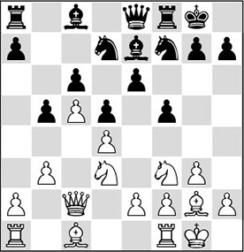
14.a4!
A strong move, achieving an important goal on the queenside.
14…bxa4
After 14…a6? 15.axb5 cxb5, Black would have even more positional problems. White has a protected passed pawn, while Black is saddled with a weakness on a6.
15.♖xa4 ♗f6 16.♗b2 a6
Bondarevsky keeps playing passively – to the profit of students, for now we will see a wonderful display of strategic understanding! If Black wanted to free himself, he should have played 16…e5 now. However, after 17.dxe5 ♘fxe5 (17…♘dxe5 18.♖fa1) 18.♖fa1 ♘xd3 19.exd3 ♗xb2 20.♕xb2 ♘xc5 21.♖xa7, White has a large advantage. His pieces are much more active than Black’s.
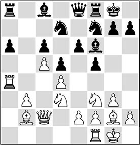
17.♘fe5!
An instructive continuation, whose main point will only become clear after some time. The first intention is clear: White wants to rule out the pawn march …e6-e5 (which Black is aiming for) once and for all. White could have put immediate pressure on the queenside by 17.♘b4 ♗b7 18.♖fa1, but after 18…♕c8, the worst part of the storm has subsided for Black. Of course, White can continue with 19.e3, to introduce the possibility of ♗g2-f1. This is not immediately decisive, but it is certainly no picnic for Black: 19…♗d8 20.♗f1 ♘b8 (20…a5 21.♘d3, followed by ♗b2-c3 will probably yield White a pawn in the end), and by this brave effort Black holds…
17…♘fxe5
Black cannot allow the active white knight to stay on this square. After all, didn’t he play his own knight to f7 to swipe that knight off the board as soon as it moved to e5?
18.dxe5
Here, an important basic rule applies for the player who has more space: he has to keep as many pieces on the board as possible.
18…♗e7 19.f4
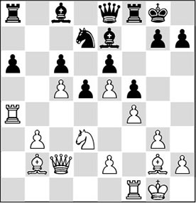
The contours of White’s ‘master plan’ start to become visible. He has achieved a gigantic advantage in space, and is able to develop play on the queenside as well as on the kingside. Since Black is saddled with a weak pawn on a6, he will aim to play on the kingside.
By recapturing d4xe5, White has obtained a beautiful square for his pieces on d4. He can use it for various pieces – especially the knight.
Before that, White obviously has to keep guarding his own pawn on c5, and he also has to keep a watchful eye on Black’s undertakings on the king’s wing.
19…♖b8
Moving out of the pin, but thereby effectively weakening the a6-pawn even more.
The pawn push 19…g5 is just a blow in the air. After 20.fxg5 ♗xg5 21.♗c1!, White keeps his spatial advantage, and his pieces will be even better placed, because Black has compromised his position. Please note that White’s scattered pawns (e5 and e2) are not at all weak – the e5-pawn is even highly important!
20.♖fa1 ♖b5 21.b4
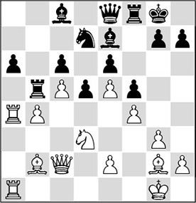
This was what Black was aiming for. He has managed to provoke the move b3-b4, depriving White of the b4-square for his pieces. On the other hand, the c5-pawn has now received extra support, and the rook on b5 has become vulnerable. The first step White has to take now is to play the knight to d4. Petrosian is already planning ♗g2-f1 and e2-e3, to besiege the pawn on a6.
21…h5
Bondarevsky seeks refuge on the kingside. Again, 21…g5 would favour White after 22.fxg5 ♗xg5 23.♗c1!.
22.♗c3!
Often, it’s such ‘little moves’ that eventually carry the day in Petrosian’s games. He considers that the b4-pawn deserves extra support, but the bishop can also assist on the kingside later on via the e1-square!
22…h4 23.e3
Considering the success of his 25th move, one might wonder if the former World Champion could have played it already at this point.
The idea is so brilliant that we won’t reveal it yet…
23…♘b8?
Much too passive. Here, or a little later, Black could have swapped pawns with 23…hxg3, to follow up with … g7-g5 or … ♕e8-h5, although this would not have worried White much.
24.♘e1!
Highly systematic: the knight aims for the d4-square, and via this square is the best way to get there.
The knight retreat also introduces the threat of ♗g2-f1.
24…♖b7
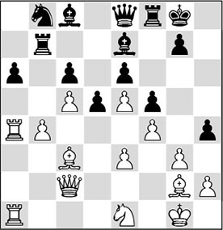
25.gxh4!!
Petrosian does not give his opponent a second chance. This is one of those brilliant strategic concepts that Petrosian was famous for. Further on, we will explain in more detail why this exchange on h4 is the appropriate plan for White.
25…♗xh4 26.♘f3 ♗d8 27.h4!
With this move, White fixes the g5-square, and it enables Petrosian to obtain an important positional advantage on the kingside as well.
So this was the point of the exchange on h4. Fixing the weakness of the g5-square also means nipping all of the opponent’s attacking chances in the bud. Moreover, he has opened the g-file for his own major pieces. Since Black also has his weakness on a6, and since, due to his shortage in space, he cannot place his pieces effectively, his position now quickly goes downhill.
27…♕h5 28.♗e1
This bishop was poised to protect Black’s potential target, the pawn on h4. Since Black does not have the right pieces to pound on this weakness, he isn’t getting any counterplay.
28…♗d7 29.♕f2
The queen also lends a helping hand on the kingside.
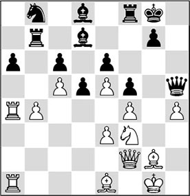
29…♔f7?
This error drastically shortens the game. Black had great problems already, but with 29…♗c8, he could still have put up a tenacious defence. White’s plan in that case is to involve his rooks in the play via the g-file, and eventually use the g6-square for his knight.
The game might have continued as follows: 30.♗f1 ♖c7 31.♕g3 ♔f7 32.♗e2 ♕h6 33.♖4a2 ♖h8 34.♗d3 ♔f8 35.♖g2 ♕h5 36.♗e2 ♕h6 37.h5! ♖g8 38.♘h4 ♔e8 39.♘g6 ♕h7 40.♕h3 ♔f7 41.♗h4.
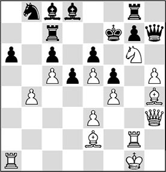
Analysis diagram
Slowly but surely, the right pieces get traded off, after which White’s pieces will penetrate further into the black position.
30.♗f1
Petrosian consistently continues his plan: pressurizing the a6-pawn, and at the same time preparing a regrouping on the king’s wing, which will eventually enable him to make progress along the g-file.
White could have changed plans with 30.♘g5+, since the surrender of the dark-squared bishop by 30…♗xg5 is also a tremendous concession for Black. After 31.hxg5 ♖h8 32.♕g3, again, White can do as he likes. By walking to the centre with his king, he can eventually take over the h-file.
30…♖h8
Black will definitely lose the pawn on a6.
31.♗xa6
And even though White now has to give up a beautiful bishop, he doesn’t scorn that pawn!
31…♘xa6 32.♖xa6 ♗e7
Here also, we see how the black pieces are struggling due to their lack of space. The bishops are virtually unemployed, and the text move is the only way to connect the rooks – otherwise White would immediately invade the seventh rank by ♖a7.
33.♖a7 ♖hb8 34.♖xb7
It wasn’t necessary to immediately release the tension. 34.♕g3 right away might have been slightly more accurate.
34…♖xb7 35.♘d4
The knight finally lands on the promised square.
35…♕h8?!
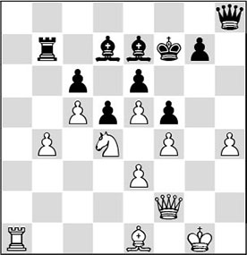
It is not clear what Black can do here. Perhaps 35…g6 would have been a more tenacious defence.
36.♕g3
Petrosian keeps following his original plan. At this moment, 36.b5! also came strongly into consideration for White, especially since 36…♗xc5?! does not work, due to 37.bxc6 ♗xd4 38.cxb7 ♗xa1 39.♕a2 ♗c6 40.♕a7!, with a decisive advantage. But such concrete variations were not up the ninth World Champion’s street – certainly not right before the time control, as then accidents can easily happen. In modern chess, we more often see top players suddenly ending their manoeuvres when they spot a tactical possibility that yields them a decisive advantage. Calculating skills have improved in the course of the years, even though the human player still does not have the slightest chance against a computer in this field!
36…♕b8?
This worsens Black’s case. A wait-and-see attitude with 36…♖c7 was preferable. White still has to prove that he can break down this wall. He can work with the breakthrough b4-b5, but he has to prepare it very carefully.
37.h5!
White takes immediate profit. Now that the h4-pawn is no longer a weakness (typically, it is hardly weak on h5), Black is ensnared further.
37…♖a7
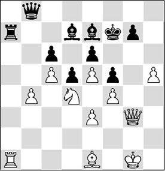
38.♖c1
Typical Petrosian. He prefers not to allow any complicating counterchances, but rather increases his own small advantages. With the text move, he gives extra backing to the c5-pawn, enabling him to work with b4-b5. Concrete calculation shows that here 38.♖xa7 ♕xa7 39.♕g6+ ♔f8
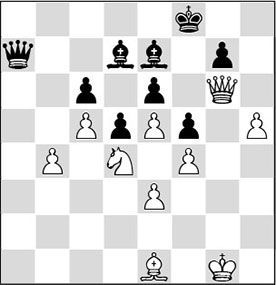
Analysis diagram
40.h6 is winning (even 40.♘xe6+ ♗xe6 41.♕xe6 ♕a1 42.♕c8+ ♔f7 wins, but White would have to find 43.e6+! ♔f6 44.♔f2 here. Black lands in a kind of zugzwang position. Each move has a drawback.). After 40…gxh6 41.♕xh6+ ♔e8 42.♕h8+ ♔f7 43.♕h7+ ♔f8 44.♗h4! ♕a1+ 45.♔g2 ♕b2+ 46.♔h3 ♗xh4 47.♕xd7!, White has a forced mate.
There was another concrete way to win for White: 38.♕g6+! ♔f8 39.h6! gxh6 (39…♖xa1 40.h7 ♖xe1+ 41.♔h2, and promotion cannot be prevented) 40.♕xh6+ ♔g8 41.♖xa7 ♕xa7 42.♘xe6 ♗xe6 43.♕xe6+ ♔g7 44.♗c3, and the black position collapses.
38…♕g8
There was no sensible continuation for Black anyway.
39.♕g6+ ♔f8
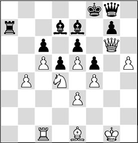
40.b5!
This breakthrough had been in the air for a while, but now that the c5-pawn is protected, Petrosian considers the time ripe.
40…♕f7 41.bxc6 ♗c8
Adjourned, and resigned by Black later on. After 42.♕xf7+ ♔xf7 43.♘b5 ♖a8 44.♘d6+ ♔f8 45.c7, the white pawn roller decides.
24.5 Prophylaxis
The concept of prophylaxis is defined as ‘measures designed to preserve health and prevent disease’. If we translate this into chess terminology, prophylaxis means taking measures against potential threats, and hindering dangerous possibilities for the opponent.
I think that there is a category of players who consider prophylactic thinking and the feeling of control of paramount importance in any position. If that is true, is this based on a deeply-rooted feeling of fear? Does this type of player simply hate to lose? Or should we formulate the question differently? Perhaps players with this style are bent on letting their opponents know who’s the boss? Doesn’t the type of play they aim for give the opponent a constant feeling of being overtaken by events? And doesn’t this dominant approach have the effect that the opponent is subjected to so much pressure that his spirit breaks and he starts making mistakes? I presume it’s a little bit of everything.
For instance, it once struck me that the Swede Ulf Andersson hated losing so much that he even allowed draws to players with a much lower Elo rating to their name. With black, equalizing after the opening, he would often be satisfied with a half point at a very early stage. I find this surprising, but I have to add that I am a great admirer of Andersson’s play. The way he would stay afloat with black in sharp Sicilians, especially in his heyday, often against opponents who were known for their formidable attacking abilities, filled me with great respect for him. So of course we cannot omit to show you an impressive piece of prophylactic thinking by the Swede at this point.
1.d4 ♘f6 2.♘f3 e6 3.♗g5 h6 4.♗xf6 ♕xf6 5.e4 d6 6.♘bd2 ♘d7 7.♗d3 g6 8.♕e2 ♗g7 9.c3 a6 10.a4 b6 11.0-0 0-0 12.b4 ♗b7 13.a5 b5 14.c4 bxc4 15.♗xc4
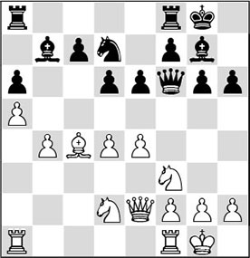
Although White has traded his dark-squared bishop for a knight in the opening, he seems to be better off at first sight. He has a considerable edge in space, and is threatening to create a passed a-pawn by b4-b5, which could mean trouble for Black. With his next move, Andersson thwarts this plan in a highly imaginative way.
15…♖a7!!
Who would even consider such a move? Black prepares to double his rooks on a closed file! – only to make the b4-b5 push unattractive. This is one of many unfathomable moves the Swede has played in his career – the type of moves that enrich the game of chess. Andersson must have considered the rigorous 15…c6 too, but probably didn’t like it. It doesn’t make the bishop on b7 look any prettier, and if White manages to push e4-e5, Black will suffer from holes on the dark squares.
16.♕e3
On 16.b5, he had planned 16…♖fa8!, and now White has to make a big effort to avoid getting into trouble strategically. After 17.♘b3 ♕d8, Black is for choice, since the a5-pawn is more of a weakness than a trump card.
16…♕e7?!
Perhaps a small stain on this game. Probably, he should have reversed the moves with 16…♖fa8 to prove his point.
17.♖a2
White could have played 17.d5!?, after which 17…♖aa8 is more or less forced, which means that Black wouldn’t realize his idea. In that case, White could have achieved some advantage by 18.dxe6 fxe6 19.♘d4, since Black has been forced to give up his beautiful bishop.
17…♖fa8!
It’s getting stranger and stranger. Black has doubled his rooks on a closed file! The intention of the text move is to frustrate the b4-b5 push, so that Black can try to get full control of the b5-square by …♗b7-c6.
18.♘b3
After 18.♖c1 ♘f6 19.♗b3, 19…♗c8, intending …♗c8-d7, is quite reasonable.
18…♘f6 19.♗d3 ♗c6
This move fits into Black’s concept. He takes further control of the b5-square, and thus hopes to prevent b4-b5 once and for all. If he succeeds in this, the b4-pawn will become a weakness.
20.♖c1 ♗e8 21.h3
White has no good plan.
21…♖b7 22.♕e1 ♕d8!
Timman once wrote that there is not a player in the world who knows better which piece to retreat, and to which square, than Ulf Andersson. Indeed, the Swede likes to retreat, all for a good cause: arranging his pieces step by step. The direct threat is 23…♕b8, after which the b4-pawn is already doomed.
23.♘a1
To protect the b4-pawn by ♘c2, but it’s not a pretty sight.
23…♗f8!
Another retreat! And also, a new indirect attack on the target. Please note how Andersson takes great pleasure in outplaying his opponent from the back rank.
24.♘c2
Forced, as 24…d5 was threatened. But seeing that the white pieces are now very unfortunately placed, Black breaks open the centre.
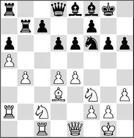
24…c5?!
The question is whether Black wouldn’t have done better to continue his strategy. After 24…♗b5 25.♗xb5 ♖xb5, he would have obtained a nice advantage.
25.d5?
It’s not rare for a player to err after being faced with such unusual opposition. Flabbergasted by Black’s moves, White makes a pawn sacrifice that is gratefully accepted by Black. Another idea was 25.♕e2!? cxb4 26.♗xa6 ♖bb8, although White would have big problems also here.
With 25.bxc5, White could have got rid of his weakness. It looks as if he won’t experience great problems after 25…dxc5 26.e5 ♘d5 27.♗e4, although Black can still boast the long-term advantage of the bishop pair.
25…exd5 26.exd5 ♘xd5
Not afraid of a few pseudo-threats, Andersson takes the pawn.
27.bxc5
Had White planned 27.♗e4, perhaps? In that case, it may have been at this point that he saw that 27…♖e7! is already almost winning for Black.
27…♖e7
An excellent zwischenzug.
28.♕d2 dxc5 29.♗c4 ♘c7
Now, 29…♖d7 would also have been strong.
30.♕xd8 ♖xd8 31.♘e3
Andersson can be trusted to convert his extra pawn.
31…♔g7 32.♘d2 ♖b8 33.♗f1 ♖e6 34.♘dc4 ♘b5
After
35.♘b6 ♖d8 36.♘ec4
White pulled the plug and resigned.
24.6 An all-rounder: Kasparov!
A candidate for the world title should probably be an all-rounder. That means that he will also have to master the type of play we have just discussed, if he wants to establish himself as one of the greatest players on this earth. I realized this when I witnessed the young Garry Kasparov in the flesh. I saw him for the first time at the World U20 Championship in Dortmund. I went there with two friends to cheer my club mate, the then Dutch junior champion, Frans Cuijpers. Cuijpers was trampled underfoot by a series of tactical shots that Kasparov conjured up during the game. When the four of us tried to reconstruct the variations he had shown us at lightning speed during the post-mortem, our heads were spinning.
1.d4 ♘f6 2.c4 e6 3.♘c3 c5 4.d5 exd5 5.cxd5 d6 6.e4 g6 7.f4 ♗g7 8.♗b5+ ♘fd7 9.a4 0-0 10.♘f3 a6 11.♗e2!
Kasparov was very proud of this move. After the game, he said: ‘Actually Black’s best move now is 11…♘f6, but then he ends up in a variation of the King’s Indian with a tempo less!’
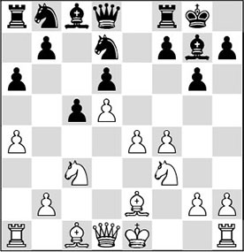
11…♘f6
If Black is stubborn, he can try something else: 11…♖e8 12.0-0 ♘f8 13.h3 ♘bd7 14.♖e1 ♖b8 15.♗f1 h6 16.♗e3 ♘h7 17.♕c2 ♘hf6, but in the end the same knight is on the best square, f6, and Black has lost a considerable amount of time: 18.♖ad1 b5 19.axb5 axb5 20.♗xb5 ♖xb5 21.♘xb5 ♘xe4 22.♗d4 ♘df6 23.♗xf6 ♘xf6 24.♖xe8+ ♘xe8 25.♘c3 ♘f6 26.♕a4 ♗d7 27.♕a7 ♘h5 28.♖a1 ♔h7 29.♕b7 ♕e7 30.♖e1 ♗d4+ 31.♔h1 ♕xe1+ 32.♘xe1 ♘g3+ 33.♔h2 ♘f1+ ½-½, Lesiege-Pigusov, Koszalin 1999.
12.0-0 ♕c7 13.e5!
Kasparov likes to move fast! Clearly, if White can push his centre forward, his position will be overwhelming already.
13…♘e8
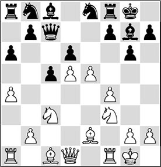
14.e6!?
I hadn’t seen this motif before. Objectively, 14.♖e1 looks better.
14…fxe6 15.♗c4!
The point!
15…♕e7
15…e5 fails to 16.fxe5, and 15…♔h8 16.dxe6 ♘c6 17.♘d5 ♕d8 18.♘g5 wins for White according to Kasparov.
16.dxe6 ♘c7
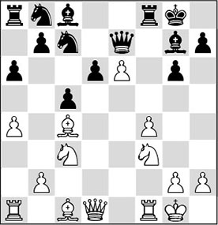
Absolutely the only move. Unfortunately it doesn’t prevent White moving full steam ahead:
17.f5!
Kasparov keeps playing forcefully. In the post-mortem, too, he crashed through the black position like a tornado.
17…♘c6
Good advice doesn’t come cheap here. 17…♖xf5 is losing, due to 18.♗g5 ♗f6 19.♗xf6 ♖xf6 20.♘e4 ♖f4 21.♘fg5, with a decisive intervention by the white pieces.
17…gxf5 18.♗g5 ♗f6 19.♗xf6 ♖xf6 20.♘h4! is also indefensible for Black.
18.♗g5
Everything with tempo seems to be White’s motto. 18.♗f4 also came into consideration, after which the position is already virtually untenable for Black. For example, 18…♘d4 19.♗xd6! ♕xd6 20.e7+ ♖f7 21.fxg6 hxg6 22.♗xf7+ is already all but lethal.
18…♗f6 19.♘e4!
The exclamation mark stems from the young Kasparov.
19…♗xg5 20.♘fxg5 gxf5
20…♖xf5 wasn’t more tenacious, since after 21.♖xf5, follows 21…gxf5 22.♕h5 and now:
A) 22…d5 23.♖a3!, and the attack is irresistible, due to the threat of 24.♖g3. 23.♘f6+ also wins after 23…♕xf6 24.♕xh7+ ♔f8 25.♕xc7, and White’s attack is sufficient;
B) After 22…fxe4 23.♖f1 ♗xe6, there is again a magnificent move that nicely demonstrates a successful way to conduct an attack on the king: the exceptionally beautiful 24.♖f7!!, a wonderful interruption: 24…♗xf7 25.♕xh7+ ♔f8 26.♕h8+ ♗g8 27.♕xg8#.

21.♘xd6!
This is better than the prosaic 21.♕xd6?!.
21…♘d4
Not unimportantly, after 21…♘e5, White wins by 22.♕h5! ♘xc4 when, again, we see the interruption motif in full swing: 23.♘df7!, and Black has to give up the queen to avoid getting mated.
21…♕xg5 22.e7+ ♗e6 23.exf8♕+ ♖xf8 24.♗xe6+ ♘xe6 25.♕d5 is also over.
22.♕h5 ♗xe6
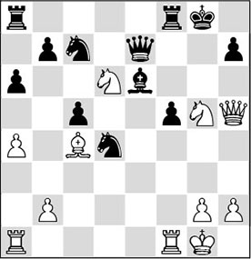
Black wants to extricate himself, but now he ends up in a permanent pin.
23.♖ae1 ♖f6
The attempt to get the queen out of the pin by 23…♕d7 also fails; White hauls in the loot by 24.♘xe6 ♘dxe6 (24…♘cxe6 25.♘xf5 ♔h8 26.♘h6, winning) 25.♖d1 ♔h8 26.♖xf5.
Now, there follows a beautiful finish:
24.♘xf5! ♘xf5 25.♘xe6 ♘xe6 26.♖xe6 ♖xe6 27.♕xf5 ♖e8 28.♖e1
And the eternal pin leads to Black’s downfall. Therefore, he resigned.
Even though this was a tactical struggle, there is no denying that Kasparov dictated the play from the beginning to the end. So this way of playing is also a means to exert control in a game.
One year later (Graz 1981) I was playing at the same tables during a match between the Soviet Union and the Netherlands for the U27 World Team Championship. Also in this tournament, the way Kasparov crashed through his opponents’ positions left a great impression on me. However, one aspect was striking: based on his excellent opening preparation Kasparov would as it were push his opponents into positions where he could attack the enemy king to his heart’s content. And then he would do a fantastic job. If possible, the analyses after the games were even more impressive here. He would shower down an enormous amount of variations over the heads of his already crushed opponents…
Despite these exceptional achievements, I wondered how this super-talent would manifest himself in a company of players who would not be led to the slaughter so easily. Would he bear up against pure world-class players, who were themselves used to dictating the game from move one? The overwhelming answer by this new promise for the future already announced itself one year later. With great supremacy, Kasparov became the victor in the extremely tough Bugojno 1982 tournament. And the way he did it! Unbeaten, with 9½ points out of 13 games, he ended 1½ point ahead of his next pursuers, Lev Polugaevsky and Ljubomir Ljubojevic. But who else had been playing? Almost the entire world elite of the day: the two former World Champions Boris Spassky and Tigran Petrosian, the solid German top player Robert Hübner and the Swede Ulf Andersson, not to mention the Great Dane Bent Larsen, our compatriot Jan Timman and the ‘oldies’ Lubosh Kavalek, Miguel Najdorf, Svetozar Gligoric and Borislav Ivkov.
When I played through the following game, I almost fell from my chair…
1.d4 ♘f6 2.c4 e6 3.♘f3 ♗b4+ 4.♗d2 ♕e7
The immediate exchange 4…♗xd2+ is also regularly played.
5.g3 ♗xd2+ 6.♕xd2 0-0 7.♗g2
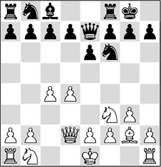
7…d5
We are entering Catalan waters, with the difference that the dark-squared bishops have already been exchanged. 7…d6 is played more often. This continuation would have been more up Petrosian’s street. Black puts his centre pawns on dark squares, and later he will play …e6-e5 or …c7-c5, and thus improve his bishop.
8.0-0 dxc4
This is Black’s idea. He wants to trade all the pawns in the centre, hoping in this way to neutralize White’s opening advantage.
9.♘a3 c5 10.dxc5 ♕xc5 11.♖ac1 ♘c6 12.♘xc4
White has his pawns back, and Black is still a long way away from equality. The most important thing is that White has already nicely developed his bishop to g2, whereas Black’s bishop on c8 does not have a bright future at this point.
12…♕e7
This is forced, since White was ready to play ♘ce5, followed by ♘xc6, damaging Black’s pawn structure.
13.♘fe5
A strong move that serves two purposes:
1) The diagonal of White’s strong bishop is opened;
2) The liberating action …e6-e5 is prevented for the time being.
13…♘xe5 14.♘xe5
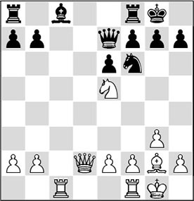
A good moment to take a closer look at the position. The pawn structure is entirely symmetrical. Both sides still have all their major pieces, and the same types of minor pieces. There are three factors that determine the considerable trouble Black finds himself in:
- White’s bishop is terribly strong, which means that Black cannot develop his c8-bishop for the time being. As a consequence, he cannot connect his rooks either.
- The knight on e5 has a paralysing effect on the black position.
- The white rook on c1 is very favourably placed on the open c-file, preventing Black from comfortably extricating himself.
14…♘d5
Black tries to curb the power of White’s bishop. By the way, this isn’t a pawn sacrifice.
14…♖d8 brings no relief, as White keeps pressure after 15.♕a5 ♘d5.
15.♖fd1
Kasparov brings his last piece into play. Just look at how all the white pieces are posted, and how cramped Black’s position is… Obviously, giving up the beautiful bishop for the knight was hardly an option. After 15.♗xd5?! ♖d8, Black will simply get his piece back, and he has got rid of an important part of his disadvantage.
15…♘b6
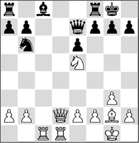
This is not a solution to the problem of Black’s position, but what was the alternative? One might wonder whether 15…f6 wouldn’t have been a better idea, to at least get rid of the annoying knight on e5. After 16.♘c4 ♖b8, White has several ways to retain his advantage. For instance, one idea is 17.♕d4 b6 18.e4 ♘c7 19.♕d6, and Black still has significant problems.
16.♕a5!
Kasparov was very content with this move. As becomes clear from the variations given above, by…♖a8-b8, Black tries to relieve his bishop on c8 from the unpleasant task of keeping the b7-pawn protected. On this square, the white queen contributes to the complete paralysis of the black pieces.
Also interesting was 16.♕d6, but after 16…♕xd6 17.♖xd6 f6, it becomes clear why Petrosian put his knight on b6. The exchange after 18.♘c4 would bring him some relief, although White would still have a very pleasant position.
However, with 18.♘d3!?, White would retain his pressure. Relatively best is 18…♖b8 (the attempt to extricate himself by 18…e5?! fails to the very strong 19.a4! ♗f5 (19…♘xa4?? 20.♖a1 ♘b6 21.♖xb6) 20.♗xb7 ♖ad8 21.♖xd8 ♖xd8 22.a5, and White is virtually winning), but after 19.♘c5 ♖e8, White again has different ways to make progress.
16…g6
Petrosian was always a specialist in ‘doing nothing’, i.e. he always knew how to find a move to strengthen his position, and at the same time wait and see what his opponent was planning. The text move looks sensible at least: he makes ‘luft’ for his king. And since White has a light-squared bishop, …h7-h6 would not be the way to go about this.
The ‘eternal’ question we could pose also here is whether it wouldn’t have been better for Black to continue with 16…f6. After 17.♘c4 ♘xc4 (here, 17…♘d5? loses to 18.e4 ♘b4 19.♘b6, winning material) 18.♖xc4, and since White’s major pieces threaten to invade the black premises, the issue is already almost decided.
17.♖d3!
White slowly strengthens his position. He prepares a possible doubling, and possibly he can occupy the d-file, with his queen behind the rook. The tactical justification of this rook move is not unimportant.
17…♘d5
Petrosian grabs his best chance. Another essential aspect of White’s last move is that 17…♖d8 could now be met with 18.♕c5!, as Black doesn’t have the rook swap on the d-file with check. This means that after 18…♕xc5 19.♖xd8+ ♕f8 20.♖xf8+ ♔xf8 21.♖c7, Black will collapse due to the weakness of the seventh rank. Please note how deplorable the black pieces are in comparison with the white pieces here.
18.e4
The knight is driven off, but this has one big disadvantage: the bishop on g2 becomes inactive for a while.
Kasparov could also have opted for 18.♕d2, after which he would get control over the d-file. Also here, Black is in dire straits.
18…♘b6
The only move. Obviously, 18…♕b4? fails to 19.♖xd5.
The alternative 18…f6? loses immediately because of 19.exd5 fxe5 20.♖c7, and the black position collapses.
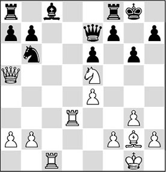
19.♗f1!
Kasparov was highly satisfied with this move. Clearly, his intention was to immediately involve the bishop in the play. He could also have waited; something could be said for 19.♖dc3. By the way, there is another, quite deep, tactical motivation behind the text.
19…♖e8
Petrosian keeps playing passively. The main reason is that he prefers not to play …f7-f6, weakening the seventh rank. Probably, again, he didn’t fancy driving off the white knight. Indeed, after 19…f6, he would be facing the loss of a pawn after 20.♘c4 ♗d7 21.♘xb6 axb6 22.♕xb6 ♗c6 23.a3, and the rest is a matter of technique. By the way, in this position, Black cannot regain the pawn with 23…♗xe4??, in view of 24.♖c7 ♕e8 25.♖dd7, and with two white rooks on the seventh rank, the game is immediately over.
20.♖dd1!
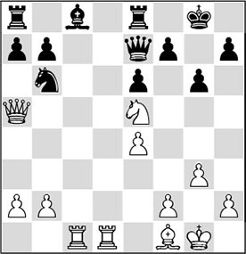
The funny thing is that the rook, which had made this beautiful move to d3, now returns to its former position. It clears the way for the bishop, now definitively cornering Black.
20…♖f8
A clear sign that the black player cannot undertake anything. How must Petrosian have felt, being surrounded like this – exactly what he himself had done to so many opponents?
On every turn, 20…f6 had to be examined. Here, after 21.♘c4 ♗d7 (after 21…♘xc4 22.♖xc4, the threat of 23.♖c7 can no longer be parried) 22.♘d6! ♖eb8 23.♖c7, Black could soon call it a day.
It is essential that here also, 20…♖d8 does not work well in view of 21.♕c5!. We can see here why 19.♗f1! was such an important move. Again, Black cannot capture the rook on d1 with check, and so he is driven further into the corner.
21.a3!
Kasparov is showing some sadistic traits. Apart from the fact that this is a useful move, it also underlines Black’s utter helplessness.
21…♔g7 22.b3
The pawn on b3 takes all the squares from the knight on b6 (those that were available to it). White’s intention is to continue a3-a4-a5.
22…♔g8 23.a4
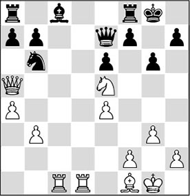
23…♖d8
Now, he considers he should go for it after all.
One might wonder what would have happened if Petrosian had persisted in ‘doing nothing’. The following plausible variation shows how soon Black would have been pushed over the edge in that case: 23…♖e8 24.♕b5!. Now, the deadly threat is a4-a5, since the knight on b6 has no squares. Black’s position is cracking at the seams, and White uses the features of the position in a beautiful way: on 24…♖b8, 25.♖c7! is a killer. If 24…f6, 25.♖c7! ♕f8 26.♘g4 ♖e7
Analysis diagram
27.♘xf6+!, and it is all over, as the following variation shows: 27…♕xf6 28.♖d8+ ♔g7 29.♕e8! ♖xc7 30.♕h8+, and Black gets mated.
Or 23…♔g7 24.♕c3 ♔g8 25.a5 ♘d7 26.♕c7 ♖d8 27.a6, and Black can throw in the towel.
24.♕c5!
Of course, he had seen that move too, and therefore the former World Champion stopped the game here, not waiting for the painful finish that would follow after 24…♕xc5 (24…♕e8 25.♘g4!) 25.♖xd8+ ♕f8 26.♖xf8+ ♔xf8 27.♖c7. White not only threatens to win the f7-pawn, but also to play 28.a5, winning a piece. The continuation 27…f6 doesn’t help on account of 28.♖f7+ ♔g8 29.♖xf6, and Black will lose even more material.
The way in which Kasparov had pushed the former World Champion with his back to the wall, giving him not the slightest chance to escape from the clutch, and cornering him in such a way that he could do nothing but shuffle his pieces to and fro – it all reminded me of the way Petrosian himself had beaten many of his opponents.
Also, the professional way in which Kasparov converted his strategic advantage completely convinced me now. This was it – he was going to be the new World Champion. And that was what happened – even though, as it turned out later, Anatoly Karpov was of an entirely different calibre than the opponents in this event. But even Karpov had to succumb to this Hercules in the end.
24.7 Constriction
Constricting an opponent, as we have demonstrated several times, does not evoke the best character traits in a man. A player who makes his opponent suffer so gravely has to be a sadist to a certain degree. Even though in my younger years I was reputed to be a sharp player, my results got better after I had studied games by the ‘controllers’, as I will call them here. And indeed, it does give some satisfaction if you manage to ensnare your opponent so tightly that he can’t ‘move a muscle’. I didn’t often succeed in this, but when I did, sometimes my opponent would even compliment me. At least that is what happened after a game with a very friendly fellow IM in the Netherlands, Erik Hoeksema. I used to feel uncomfortable in our mutual games. We both played in the same style, and it is difficult to play against yourself.
Erik showed great sportsmanship when, right after the game, in which he had had to suffer ‘great pains’, he quipped that this one would probably end up in my collection of ‘Grooten classics’. That convinced me, dear reader, in my decision to present it also to you.
1.d4 ♘f6 2.c4 c5 3.d5 b5
One of the first occasions when my esteemed opponent made use of the Benko Gambit.
4.cxb5 a6 5.b6
The Declined Benko – a line I had borrowed from my former pupil, GM Loek van Wely, who also liked to play it.
5…d6 6.♘c3 ♕xb6 7.e4 e6?!
A rare move, which probably doesn’t deserve to be repeated. 7…g6 is the main line here.
8.♘f3
8…♗e7
After 8…exd5 9.exd5 ♗g4, I had planned to continue with 10.♕a4+, because in principle White wants to exchange as few pieces as possible: 10…♘bd7 (10…♗d7 11.♕c2) 11.♘d2 (that’s the idea: the knight strives for c4) 11…♗e7 (not 11…♕b4?!, in view of 12.♕c6!, and Black is in big trouble) 12.h3 ♗h5 13.g4 ♗g6 14.f4!, and Black has big problems, since his pieces are very cramped.
9.♘d2
The knight would love to go to c4, as soon as possible!
9…exd5 10.exd5 0-0 11.♘c4 ♕c7 12.♗e2 ♗f5
Black has a problem with his queen’s bishop. With this developing move, Hoeksema intends to exchange a piece by …♘e4, so as to ‘get some air’. Black should have continued 12…♘bd7, after which I like 13.♗f4 best. Following 13…♘b6 14.♘e3, White gets what he wants after all. In a game Kovtun-Bedgarani, Voroshilovgrad 1989, White managed to win later on.
13.♗f3!
Just like in the Benoni, at this point, White wants at all cost to prevent Black from carrying through his plan. If White succeeds, Black’s lack of space will start playing a role.
13…♘bd7?
Not realizing what is hanging above his head.
14.g4!
This wasn’t the kind of move Erik expected from me; I am not known as a player who makes such ‘crude’ pawn moves. In the present case, this push is very strong. White increases his space advantage, while the black bishop is starting to gasp for air.
14…♗g6 15.g5
The right idea. The pawn on g5 deprives no less than three black pieces of the f6-square! Moreover, the f6-knight has to retreat to the bad square e8, where it disrupts the cooperation between the rooks. Less good was the logical 15.h4 h6 16.g5 hxg5 17.hxg5 ♘h7, when the pawn on g5 would come under fire, and for the moment White can do nothing with the open h-file.
15…♘e8 16.h4 f6
More or less forced, we could say. But 16…♘e5! would have been the lesser evil. If anything, Black forces an exchange of pieces with this move, which is in his favour: 17.♘xe5 dxe5. Now, it is best for White to insert the move 18.h5 (during the game, I was wondering whether 18.d6 would be a good idea. However, after 18…♘xd6 19.♗xa8 ♖xa8, Black has decent compensation for the exchange. The white king is anything but safe, and Black’s pieces are quite active now. In a practical game, I might even prefer Black here…) 18…♗f5 19.h6 g6, and now, yes: 20.d6 ♘xd6 21.♗xa8 ♖xa8, but also here Black has sufficient compensation.
Also possible is 16…♘b6, although with 17.♘e3!, White can now force his opponent to play the weakening pawn move he also played in the game.
17.♗g4
White directs his attention to the weak square e6, but with this he gives his opponent a chance that should not have been given. Perhaps 17.h5 ♗f5 18.g6 was slightly more clever, although again, after 18…♘e5 19.♗e2 ♘xc4 20.♗xc4, Black can free himself by 20…♕d7.
17…♘e5?
At first, I wanted to exchange the knights, and then continue with h4-h5, but then I remembered the wise saying ‘Why release the tension if it isn’t immediately necessary?’. 17…f5 is no fun for Black for two reasons – after simply 18.♗f3, my opponent saw the ♘c3-e2-f4-e6 manoeuvre coming, but the tough approach with 18.h5 might have been even better.
After 17…fxg5!, White would have been wise to insert 18.♕e2. 18.♗e6+ first does not achieve much: 18…♔h8 19.hxg5 ♘e5! 20.♘xe5 dxe5, and Black has extricated himself. His miserable knight on e8 can go to the nice d6-square, from where it can even be played to d4 via f5.
18.h5!
Very energetically played, but also very strong. I calculated a few variations, and saw a few mate pictures looming up. When I couldn’t find anything for Black, I decided to play the text move. Now, my opponent entered the think tank for something like 40 minutes, and managed to find a stunning defence – which, however, does not appear to provide a solution to the problem.
Indeed, Black still holds after 18.♘xe5?! fxe5 19.h5 ♗f5 20.♗xf5 ♖xf5 21.♕g4, although White would have a significant strategic advantage thanks to his possession of the e4-square. But the vulnerable white king doesn’t make things any easier.
18…♗f5!?
I almost fell off my chair when I sat down at the board again and saw what he had played. This is a highly creative attempt to overcome Black’s problems. But even though the move is very original, it fails to save Black.
A) Immediately losing is 18…♘xc4?, in view of 19.hxg6 f5 20.♖xh7 fxg4 21.♕xg4, with unstoppable mate, for example: 21…♕c8 22.♖h8+ ♔xh8 23.♕h5+ ♔g8 24.♕h7#;
B) 18…f5 does not save Black: 19.hxg6! (19.♘xe5 is also good), and now:
B1) 19…♘xg4 is no solution: 20.♕e2!, and Black has no decent way to protect the e6-square: 20…hxg6 21.♕e6+ ♖f7 22.♕xg6
Analysis diagram
(now, White threatens 23.♕h7+ followed by 24.♕h8) 22…♗d8 (to vacate the e7-square for the king, but it won’t help Black) 23.♕h7+ ♔f8, and, funnily enough, Black cannot do anything against White’s threat to put his rook on the e-file, catching the black king in a mating net. For example: 24.♗f4 ♖b8 (running away with 24…♔e7 25.♔f1 ♔d7 fails to 26.♕g6!, and it is over: 26…♖f8 27.♕e6#) 25.♔f1 ♖b4 26.♖e1, after which 27.♕h8+ is a lethal check;
B2) On 19…fxg4, White continues with 20.♘xe5 dxe5 21.d6! (this line and square clearance is an important theme) 21…♕c6 (after 21…♕xd6, the a2-g8 diagonal falls into White’s hands: 22.♕b3+ ♔h8 23.♖xh7#) 22.♖xh7 ♗xd6 23.♕xg4, with mate.
C) Another important point is 18…♘xg4 19.hxg6 ♕c8 (not 19…f5?, in view of 20.♕e2! hxg6 21.♕e6+ ♖f7 22.♕xg6, with variations analogous to the ones given above) 20.♕e2! (20.♘b6 is nothing for White after 20…♕f5!) 20…♕f5 21.f4! ♘c7 22.gxh7+ ♔h8 23.♖g1, and White wins the knight on g4. Nevertheless, Black is still playing in this position: 23…♘h2!? 24.♕xh2 ♘xd5 25.♘xd5 ♕xd5 26.♘e3 ♕e4, and even though his material surplus is large, White has to be extremely careful to strike down Black’s initiative. He can achieve this with 27.♖g4!;
D) The bishop retreat 18…♗f7 fails after 19.♘xe5 fxe5 20.g6! hxg6 21.hxg6, and Black goes down: 21…♗xg6 22.♗e6+ ♗f7 23.♕h5! – the leitmotiv in this position. Mate cannot be prevented after 23…♗xe6 24.dxe6.
19.♗xf5 ♘xc4 20.♕e2 ♘b6
The last important moment in this game. Now, I calculated a variation in which I saw some new mate pictures on the horizon. But when the calculations started to become too intricate, I decided to just win in a positional way.
21.g6!
The human decision. Now that I have conquered the light squares, there is also the winning 21.♗xh7+ – I suspected this, but the variations are quite complex: 21…♔xh7 (during the game, I thought 21…♔h8 was not so clear. With hindsight, 22.♗g6! turns out to be a simple win) 22.g6+ ♔g8 (22…♔h8 23.h6!) 23.♕e6+ ♔h8 24.h6 ♕d7 25.hxg7+ ♔xg7, and now analysis proves that 26.♕e3! results in a forced mate in 6. Human players will first look at 26.♗h6+ ♔xg6 27.♖g1+ ♔xh6 (27…♔h7 28.♕e4+ f5 29.♕h1 – again, this pretty ‘queen retreat’ that forces the win), and now 28.♕e3+ ♔h7 29.♕e4+ f5 30.♕h1+ is a nice mating line!
21…h6
A small exercise: how does White increase his advantage?
22.♖h4!!
In my opinion, this is a wonderful move, which exposes Black’s helplessness. When I started evaluating it, I got a kind of kick, realizing that I was going to defeat a pretty good opponent in an attractive way. White puts three major pieces on a file, and wins a piece. The bishop on e7 cannot be protected three times, which means that the knight on e8 will perish. Black’s pieces are so unfortunately placed that there is no way for him to disentangle. If you thought of 22.♔f1 (with the same idea), you may also congratulate yourself.
Of course, I briefly looked at 22.♗e6+, in order after 22…♔h8 to see whether White could achieve something by 23.♗xh6 gxh6. But as I didn’t find a forced line immediately, I let this chance pass by. A true attacking player would curse himself if he hadn’t looked further here. And indeed: by opening more lines before the black king, there is a win on the horizon: 24.g7+! (24.♕e3? is no good, due to 24…♔g7) 24…♘xg7 25.♕e3 ♔h7 26.♕g3! (of course, such moves are not very difficult to find, but the problem is that you have to realize at an earlier stage that you have to search in this direction) 26…♔h8 27.♕g6, and Black can forget about the rest.
22…♖a7
Obviously, Black tries to defend in this way. 22…♕d8 23.♖e4 ♖a7 24.♗f4 wouldn’t have helped either. White continues with the plan from the game (♗c1-f4, ♔e1-f1 and ♖a1-e1) and wins. Immediately losing is 22…♗d8, in view of 23.♖e4, and the knight on e8 is already lost.
23.♖e4 ♔h8
There are simply no decent moves to be found for Black.
Of course, it is still essential that 23…♘c8 still fails to 24.♗xc8 (though the computer thinks that 24.♗f4! is even stronger!) 24…♕xc8 25.♖xe7, winning a piece.
24.♗f4
A pretty final position. Black resigned. He has no remedy to the two white threats:
1) tripling on the e-file;
2) the manoeuvre ♕e2-d2 followed by ♗xh6.
Exercises
In the exercises given below you have to recognize various themes from Steinitz’s table of elements. With each exercise you have to find a plan or a good concept, with which you can try to accumulate small advantages during the game. You won’t have to rack your brains trying to convert these advantages into a win. In the Solutions part you will find a verbal analysis of the positions presented here.
The Patience of a Saint with the ‘V’
Petrosian, playing with white, has achieved the ‘V for Victory’ formation on the board. His space advantage is gigantic, but how can White make progress? Formulate a plan.
Keep the right pieces on the board!
What has White achieved by developing his bishop to g5, provoking …h7-h6 ?
What square is White playing for?
Give a verbal analysis of this position. Write down some characteristics, and determine who is better. Formulate a plan for making progress.
How to demolish an abandoned king’s position?
White has sacrificed a pawn in the opening, but he has obtained quite a lot of compensation in return. Indicate what this compensation consists of, and how White can convert his advantages into more concrete goals.
Break the black camp into two!
After a highly unorthodox sequence of moves in the opening, White has obtained a huge space advantage. The question is: how can he put this to good use? What would you play?
Disorganize the enemy position
Earlier in the game, White invested an exchange to conquer beautiful squares for his pieces. Black has been fighting back, and now he seems to be back in the game. How did Kramnik manage to take over the initiative after all?
Open files, ranks and diagonals towards the enemy king!
The Dutch grandmaster has a gigantic space advantage. He is also temporarily a pawn up, but Black seems to be developing some counterplay because the white king is not perfectly safe either. For the moment, the knight on f5 is taboo for White, as after exf5, gxf5, Black does not have many problems yet. But how can White make his way toward the black king after Black’s last move, 34…♔g8-g7 ?
Keep him constrained!
The black pieces are very passive. The ♖g8 has to keep protecting the ♗g7. The ♖h5 is ‘permanently’ locked up and the ♗h3 has to keep guarding the g4-square, since otherwise White could lock in the ♖h5 by h2-h4 and sometimes g3-g4. But what is the most convincing way to convert these advantages into a full point?